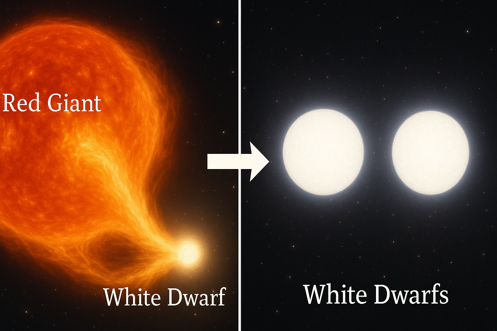
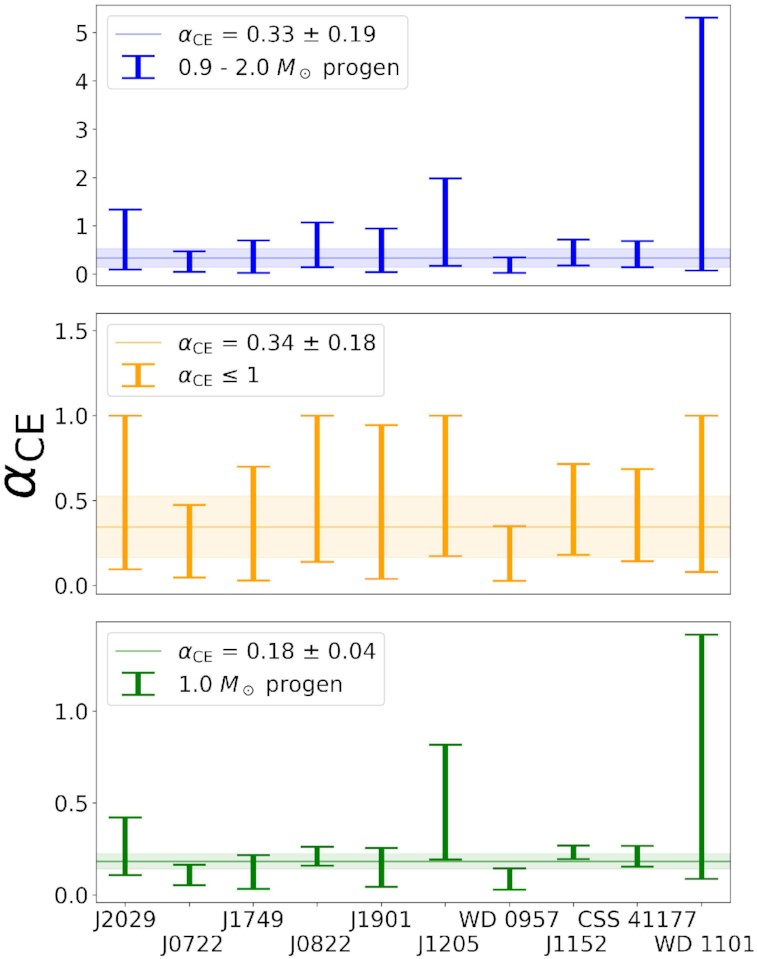

White dwarf binaries suggest a common envelope efficiency α ∼ 1/3
image 1

The number of short period double white dwarf (WD) binaries has doubled within the last decade, mainly due to the Zwicky Transient Facility (ZTF) and its ability to detect eclipsing binaries that therefore show flux variations. This systems - with periods less than an hour - are interesting for numerous reasons. They are gravitational wave sources that will be detected by the upcoming LISA mission, are probes of tidal physics such as resonance locks, and they will eventually undergo mass transfer, many likely forming a class of cataclysmic variable binaries known as AM CVn. Their short orbital period also means that they underwent a common envelope (CE) event, a highly uncertain stage of binary evolution where two stars orbit inside a shared envelope. The envelope is partially or fully ejected, either leaving behind the stars at a greatly reduced separation or causing them to merge. In the case of these double WD binaries, the CE marked a drastic transition from red giant branch star (RGB) plus WD, to 2 WDs in a binary, the observed configuration.
I therefore used a sample of double WD binaries with well-measured properties and modeled their evolutionary history, in particular the CE events that formed them. I modeled both the pre- and post-CE states for all the binaries in the sample. I created a grid of WD models using the Modules for Experiments in Stellar Astrophysics (MESA) code, varying the total mass and hydrogen envelope mass (the hydrogen mass can matter a lot especially for low mass WDs, where it can change the cooling timescale and sometimes result in H shell flashes). I fit the observed properties of the younger WD to the grid, and thereby estimated the post-CE period of the binary, which can be substantially longer than the observed period, as the double WD binary has been inspiralling due to GW emission every since formation. For the pre-CE state, I created a grid of red giant branch (RGB) models, also in MESA, as the younger He WD was initially the core of its RGB progenitor. I then mapped post- to pre-CE states, to estimate the envelope binding energy of the RGB star, when its core mass equals the mass of the younger WD. This approach gives the entire energy budget of the event - pre- and post-CE orbital energies, and the binding energy of the envelope that is ejected during the CE. This gives an estimate of αCE, the efficiency of the CE event, which is an uncertainty that propagates to many predictions of binary evolution and population synthesis.
I found that a relatively low value of αCECE
image 2
